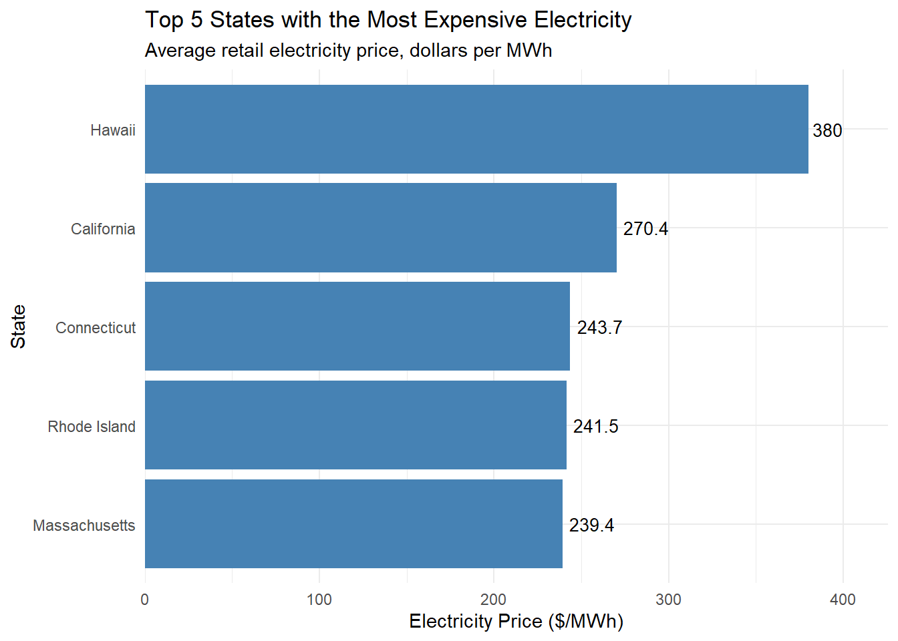
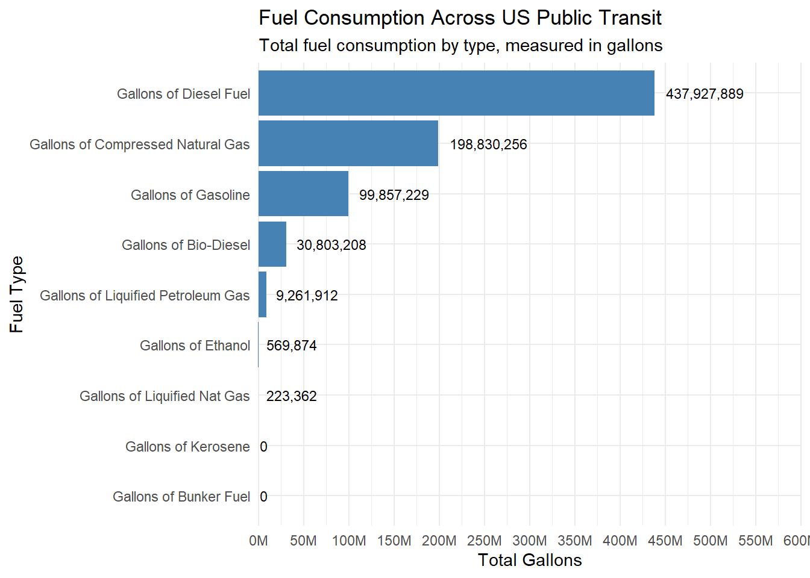
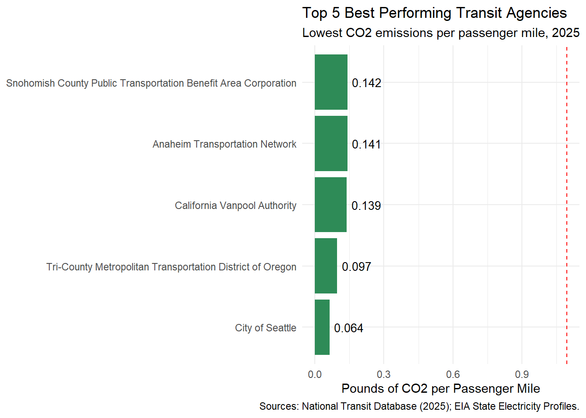

Mini-Project #02: Identifying Environmentally Responsible US Public Transit Systems
Author
Edgar Rios
Published
November 6, 2026
Introduction
The purpose of this project is to identify the annual winners of the Green Transit Alliance (GTA) Awards by evaluating the environmental performance of public transit agencies across the United States. As Executive Director of the GTA, my goal is to determine which transit agencies are the most environmentally efficient based on their estimated CO₂ emissions and passenger usage. To conduct my analysis, I use three datasets: the EIA State Electricity Profiles, the 2025 National Transit Database Energy Consumption data, and the 2025 NTD Service data. I explore and combine these datasets to estimate CO₂ emissions, and compare transit agencies based on their emission per passenger trip and per passenger mile, while considering the agencies by size from smallest to largest. At the end, I use my results to announce them in the GTA Awards press release.
load_ntd_energy <-function(){library(readxl)library(httr2)library(tidyverse)library(fs)# Create 'data/mp02' directory if not already present DATA_DIR <- fs::path("data", "mp02") fs::dir_create(DATA_DIR, recurse=TRUE) NTD_ENERGY_FILE <- fs::path(DATA_DIR, "2025_ntd_energy.xlsx")if(!fs::file_exists(NTD_ENERGY_FILE)){library(httr2)request("https://www.transit.dot.gov/") |>req_url_path("sites","fta.dot.gov","files","2026-09","2025 Energy Consumption_260806.xlsx") |>req_headers(`User-Agent`="Mozilla/5.0 (Macintosh; Intel Mac OS X 10.15; rv:149.0) Gecko/20100101 Firefox/149.0") |>req_perform(NTD_ENERGY_FILE) }if(file.info(NTD_ENERGY_FILE)$size <1e4){cat("I was unable to download the NTD Energy File. Please try again.\n")stop("Download failed. Please delete the corrupted file by running `unlink('data/mp02/2025_ntd_energy.xlsx')` and try again.") } to_numeric_fill_0 <-function(x){ x <-if_else(x =="-", NA, x)replace_na(as.numeric(x), 0) }read_excel(NTD_ENERGY_FILE) |>select(-c(`Reporter Type`, `Reporting Module`, `Gallons of Other Fuel`, `Other Fuel Description`)) |>mutate(across(-c(`Agency Name`, `Mode`,`TOS`), to_numeric_fill_0)) |>group_by(`NTD ID`, `Mode`, `Agency Name`) |>summarize(across(where(is.numeric), sum), .groups ="keep") |>mutate(ENERGY =sum(c_across(c(where(is.numeric))))) |>filter(ENERGY >0) |>select(-ENERGY) |>ungroup()}NTD_ENERGY <-load_ntd_energy()
NTD service
Code
load_ntd_service <-function(){library(httr2)library(tidyverse)library(fs)# Create 'data/mp02' directory if not already present DATA_DIR <- fs::path("data", "mp02") fs::dir_create(DATA_DIR, recurse=TRUE) NTD_SERVICE_FILE <- fs::path(DATA_DIR, "2025_ntd_service.csv")if(!fs::file_exists(NTD_SERVICE_FILE)){library(httr2)request("https://data.transportation.gov/resource/4fir-qbim.csv") |>req_url_query(`$query`=paste("SELECT `_5_digit_ntd_id` AS `NTD_ID`", "`max_agency` AS `AGENCY`","`max_reporter_type` AS `reporter_type`","`max_organization_type` AS `organization_type`","`max_city` AS `city`","`max_state` AS `state`","`mode`","`type_of_service`","`max_primary_uza_code` as `uza_code`","`max_primary_uza_name` as `uza_name`","`max_primary_uza_area_sq_miles` as `uza_sq_miles`","`max_primary_uza_population` as `uza_population`","`max_service_area_sq_miles` as `service_area_sq_miles`","`max_service_area_population` as `service_area_population`","`questionable_record` as `flagged_likely_inaccurate`","`sum_unlinked_passenger_trips_upt` as `total_upt`","`sum_passenger_miles` WHERE caseless_one_of(`report_year`, '2025') limit 50000", sep=",")) |>req_headers(`User-Agent`="Mozilla/5.0 (Macintosh; Intel Mac OS X 10.15; rv:149.0) Gecko/20100101 Firefox/149.0") |>req_perform(NTD_SERVICE_FILE) }if(file.info(NTD_SERVICE_FILE)$size <1e4){cat("I was unable to download the NTD Service File. Please try again.\n")stop("Download failed. Please delete the corrupted file by running `unlink('data/mp02/2025_ntd_service.xlsx')` and try again.") }read_csv(NTD_SERVICE_FILE) |>mutate(flagged_likely_inaccurate =!is.na(flagged_likely_inaccurate))}NTD_SERVICE <-load_ntd_service()
Task 2: Recoding the Mode column
Code
# Check original transportation mode codesNTD_ENERGY |>distinct(Mode) |>arrange(Mode)
# A tibble: 17 × 1
Mode
<chr>
1 AR
2 CB
3 CC
4 CR
5 DR
6 FB
7 HR
8 IP
9 LR
10 MB
11 MG
12 RB
13 SR
14 TB
15 TR
16 VP
17 YR
# A tibble: 17 × 1
Mode
<chr>
1 Aerial Tramway
2 Alaska Railroad
3 Bus
4 Bus Rapid Transit
5 Cable Car
6 Commuter Bus
7 Commuter Rail
8 Demand Response
9 Ferryboat
10 Heavy Rail
11 Hybrid Rail
12 Inclined Plane
13 Light Rail
14 Monorail/Automated Guideway
15 Streetcar Rail
16 Trolleybus
17 Vanpool
I recoded the transportation mode abbreviations in the NTD Energy dataset into their full names to make the data easier to understand and interpret. I also checked the Mode column before and after recoding to verify the changes.
Task 3a: Initial Analysis of SEP Data
1. Which 5 states have the most expensive retail electricity?
Code
# Find the 5 states with the highest electricity pricestop5_price <- EIA_SEP_REPORT |>arrange(desc(electricity_price_MWh)) |>slice_head(n =5)# Create a bar graphggplot(top5_price,aes(x =reorder(state, electricity_price_MWh),y = electricity_price_MWh)) +geom_col(fill ="steelblue") +geom_text(aes(label =round(electricity_price_MWh, 1)),hjust =-0.15,size =3.5 ) +coord_flip() +labs(title ="Top 5 States with the Most Expensive Electricity",subtitle ="Average retail electricity price, dollars per MWh",x ="State",y ="Electricity Price ($/MWh)" ) +scale_y_continuous(expand =expansion(mult =c(0, 0.12)) ) +theme_minimal()

Hawaii has the highest average retail electricity price at $380 per MWh, followed by California, Connecticut, Rhode Island, and Massachusetts. Hawaii stands out with significantly higher electricity prices, which may be due to its heavy reliance on imported petroleum for electricity generation and its isolated island power grids.
2. Which 5 states have the ‘dirtiest’ electricity mix?
Code
# 5 states with the highest CO2 emissionstop5_dirty <- EIA_SEP_REPORT |>arrange(desc(CO2_MWh)) |>slice_head(n =5) |>select(state, primary_source, CO2_MWh, generation_MWh)# Tabletop5_dirty |> gt::gt() |> gt::cols_label(state ="State",primary_source ="Primary Energy Source",CO2_MWh ="CO2 (lbs/MWh)",generation_MWh ="Total Generation (MWh)" ) |> gt::fmt_number(columns =c(CO2_MWh, generation_MWh),decimals =0 ) |> gt::tab_header(title ="Top 5 States with the Dirtiest Electricity Mix",subtitle ="Ranked by carbon dioxide emissions intensity" )
Top 5 States with the Dirtiest Electricity Mix
Ranked by carbon dioxide emissions intensity
State
Primary Energy Source
CO2 (lbs/MWh)
Total Generation (MWh)
West Virginia
Coal
1,912
50,594,818
Kentucky
Coal
1,744
66,950,848
Wyoming
Coal
1,724
40,709,150
Missouri
Coal
1,456
66,875,710
Hawaii
Petroleum
1,426
9,160,979
West Virginia has the dirtiest electricity mix, producing 1,912 pounds of CO₂ per MWh, followed by Kentucky, Wyoming, Missouri, and Hawaii. Four of these states primarily rely on coal for electricity generation, while Hawaii relies on petroleum, contributing to their high CO₂ emissions.
3. On average, how many pounds of CO2 are emitted per MWh of electricity produced in the US?
Code
# The weighted average CO2 emissionsavg_co2 <- EIA_SEP_REPORT |>summarize(weighted_avg =weighted.mean(CO2_MWh, generation_MWh) )avg_co2
weighted_avg
1 784.8565
On average, the United States emits 784.86 pounds of CO2 per MWh of electricity generated.
Task 3b: Explore NTD Service Data
1. Which five transit agencies used the most gallons of fuel (all sources) and how did it breakdown by type?
New Jersey Transit Corporation has the highest fuel consumption at approximately 41.7 million gallons, followed by MTA New York City Transit at 40.8 million gallons. Diesel is the primary fuel source for most of the top five agencies, while Los Angeles County Metropolitan Transportation Authority relies mainly on compressed natural gas.
2. Across all US public transit, visualize the amounts of each type of fuel used
Code
# The total gallons used by fuel typefuel_totals <- NTD_ENERGY |>summarise(across(starts_with("Gallons"), sum)) |>pivot_longer(cols =everything(),names_to ="Fuel_Type",values_to ="Total_Gallons" )# Bar graphggplot(fuel_totals,aes(x =reorder(Fuel_Type, Total_Gallons),y = Total_Gallons)) +geom_col(fill ="steelblue") +geom_text(aes(label = scales::comma(Total_Gallons)),hjust =-0.15,size =3 ) +coord_flip(clip ="off") +labs(title ="Fuel Consumption Across US Public Transit",subtitle ="Total fuel consumption by type, measured in gallons",x ="Fuel Type",y ="Total Gallons" ) +scale_y_continuous(breaks =seq(0, 600000000, by =50000000),labels =function(x) paste0(x /1000000, "M"),limits =c(0, 600000000),expand =expansion(mult =c(0, 0)) ) +theme_minimal()

Diesel is the most used fuel across U.S. public transit agencies, with approximately 437.9 million gallons consumed. Next is compressed natural gas at 198.8 million gallons and gasoline at 99.9 million gallons. The other fuel types, such as bio-diesel, liquefied petroleum gas, and ethanol, and the remaining account for the smaller amounts of total fuel consumption.
3. What is the least commonly used fuel source for US public transit?
Code
# The least commonly used fuel sourceleast_fuel <- fuel_totals |>filter(Total_Gallons >0) |>arrange(Total_Gallons) |>slice_head(n =1)least_fuel
# A tibble: 1 × 2
Fuel_Type Total_Gallons
<chr> <dbl>
1 Gallons of Liquified Nat Gas 223362
The least commonly used fuel source across US public transit is Liquified Nat Gas, with 223,362 gallons consumed.
Task 3c: Explore NTD Service Data
2. What is the average trip length of a trip on MTA NYC?
Code
# MTA NYC servicesmta_nyc <- NTD_SERVICE |>filter(str_detect(AGENCY, "MTA New York City Transit")) |>summarise(total_miles =sum(sum_passenger_miles, na.rm =TRUE),total_trips =sum(total_upt, na.rm =TRUE) ) |>mutate(avg_trip_length = total_miles / total_trips)mta_nyc
The average trip length on MTA New York City Transit is 3.18 miles per unlinked passenger trip.
3. Which transit service in NYC has the longest average trip length?
Code
# The NYC transit service with the longest average tripnyc_services <- NTD_SERVICE |>filter(city %in%c("New York City", "Brooklyn")) |>filter(total_upt >0) |>mutate(avg_trip_length = sum_passenger_miles / total_upt) |>arrange(desc(avg_trip_length))# Display the service with the longest average tripnyc_longest <- nyc_services |>slice_head(n =1) |>select(AGENCY, mode, city, avg_trip_length)nyc_longest
# A tibble: 1 × 4
AGENCY mode city avg_trip_length
<chr> <chr> <chr> <dbl>
1 MTA New York City Transit CB Brooklyn 17.5
The NYC transit service with the longest average trip length is MTA New York City Transit, which has a Commuter Bus service with an average trip length of 17.48 miles.
# Calculate total CO2 emissions in poundstransit_data <- transit_data |>mutate(combustion_emissions_lb =`Gallons of Diesel Fuel`*22.45+`Gallons of Bio-Diesel`*22.45+`Gallons of Gasoline`*18.73+`Gallons of Ethanol`*18.73+`Gallons of Kerosene`*21.78+`Gallons of Liquified Petroleum Gas`*12.68+`Gallons of Bunker Fuel`*24.78+`Gallons of Compressed Natural Gas`* (120.85*0.12667) +`Gallons of Liquified Nat Gas`* (120.85*0.0826) +`Kilograms of Hydrogen`*0,electricity_kWh =`Kilowatt hours of Electric Battery`+`Kilowatt hours of Electric Propulsion`,total_emissions_lb =case_when( electricity_kWh ==0~ combustion_emissions_lb,!is.na(CO2_MWh) ~ combustion_emissions_lb + electricity_kWh /1000* CO2_MWh,TRUE~NA_real_ ) )
# A tibble: 10 × 5
`Agency Name` Mode state CO2_MWh total_emissions_lb
<chr> <chr> <chr> <dbl> <dbl>
1 King County Dema… WA 249 24361515.
2 King County Ferr… WA 249 6468518.
3 King County Bus WA 249 211031652.
4 King County Stre… WA 249 523881.
5 King County Trol… WA 249 2854414.
6 King County Vanp… WA 249 8767520.
7 Spokane Transit Authority Dema… WA 249 6521720
8 Spokane Transit Authority Bus WA 249 27327385.
9 Spokane Transit Authority Vanp… WA 249 1096810.
10 Pierce County Transportation Benefit … Dema… WA 249 6915967.
To calculate emissions, I first prepared the data sets by standardizing the NTD agency IDS into five-digit identifiers and recoded the transportation modes in the NTD service data set like I did in Task 2 so that before combining the data sets, they have consistent identifiers and modes to join all three data sets together. I then joined the three data sets together to create a table containing each agency-mode combination with their state, fuel consumption and electricity emissions rate. I calculated the CO₂ emissions from fuel consumption using conversion factors from the EIA website, matching the NTD fuel types to the closest available EIA categories. I also calculated emissions from electricity consumption using each state’s CO₂ emissions per MWh. Using these calculations, I found the total CO₂ emissions in pounds for each agency-mode combination. Finally, I verified my results by checking the number of missing values, and total estimated CO₂ emissions.
Task 6: Normalize Emissions to Transit Usage
Calculating Emissions per Passenger
Code
# Calculate total emissions across all modes for each agencyagency_emissions <- transit_data |>group_by(`NTD ID`, `Agency Name`) |>summarise(state =first(state),total_emissions_lb =if (any(is.na(total_emissions_lb)))NA_real_elsesum(total_emissions_lb),.groups ="drop" )# Calculate total passenger usage by agencyagency_usage <- NTD_SERVICE |>group_by(NTD_ID) |>summarise(upt =sum(total_upt, na.rm =TRUE),passenger_miles =sum(sum_passenger_miles, na.rm =TRUE),.groups ="drop" )# Calculate emissions per trip and per passenger mileagency_emissions <- agency_emissions |>left_join(agency_usage, by =c("NTD ID"="NTD_ID")) |>filter( upt >=100000, passenger_miles >0,!is.na(total_emissions_lb) ) |>mutate(lbs_per_upt = total_emissions_lb / upt,lbs_per_mile = total_emissions_lb / passenger_miles,size =case_when( upt <1e6~"Small", upt <2e7~"Medium",TRUE~"Large" ) )# Most efficient agencies by passenger mileagency_emissions |>group_by(size) |>slice_min(lbs_per_mile, n =3, with_ties =FALSE) |>ungroup() |>mutate(size =factor(size, levels =c("Small", "Medium", "Large"))) |>arrange(size, lbs_per_mile) |>select(size, `Agency Name`, state, upt, lbs_per_upt, lbs_per_mile) |>gt(groupname_col ="size") |>tab_header(title ="Most Efficient Transit Agencies by Size",subtitle ="Lowest CO2 emissions per passenger mile, 2025" ) |>cols_label(`Agency Name`="Agency",state ="State",upt ="Trips",lbs_per_upt ="CO2 per Trip (lbs)",lbs_per_mile ="CO2 per Mile (lbs)" ) |>fmt_number(columns = upt, decimals =0) |>fmt_number(columns =c(lbs_per_upt, lbs_per_mile), decimals =3)
Most Efficient Transit Agencies by Size
Lowest CO2 emissions per passenger mile, 2025
Agency
State
Trips
CO2 per Trip (lbs)
CO2 per Mile (lbs)
Small
Adirondack Transit Lines, Inc.
NY
358,744
12.751
0.146
San Diego Association of Governments
CA
932,174
8.320
0.162
Denver Regional Council of Governments
CO
147,193
7.588
0.164
Medium
City of Seattle
WA
2,292,743
0.058
0.064
California Vanpool Authority
CA
3,165,914
4.358
0.139
Anaheim Transportation Network
CA
8,284,155
0.201
0.141
Large
Tri-County Metropolitan Transportation District of Oregon
OR
65,782,710
0.400
0.097
San Francisco Bay Area Rapid Transit District
CA
58,368,709
2.083
0.151
Port Authority Trans-Hudson Corporation
NY
64,279,458
0.835
0.180
Adirondack Transit Lines, Inc. had the lowest CO₂ emissions per passenger mile out of the small agencies at 0.146 pounds. The City of Seattle, medium agency, ranked first at 0.064 pounds. For large agencies, Tri-County Metropolitan Transportation District of Oregon had the lowest emissions at 0.097 pounds per passenger mile. Overall, the City of Seattle had the lowest emissions per passenger mile across all three size categories.
Task 7: Determine Award Winners
Award 1: Best Environmental Performance
Code
agency_emissions |>slice_min(lbs_per_mile, n =5, with_ties =FALSE) |>select(`Agency Name`, state, size, lbs_per_mile) |>gt() |>tab_header(title ="Top 5 Greenest Transit Agencies",subtitle ="Ranked by Lowest CO2 Emissions per Passenger Mile, 2025" ) |>cols_label(`Agency Name`="Agency",state ="State",size ="Agency Size",lbs_per_mile ="CO2 per Mile (lbs)" ) |>fmt_number(columns = lbs_per_mile, decimals =3) |>tab_style(style =list(cell_fill(color ="#D9EAD3"),cell_text(weight ="bold", color ="#216E39") ),locations =cells_body(rows =1) )
Top 5 Greenest Transit Agencies
Ranked by Lowest CO2 Emissions per Passenger Mile, 2025
Agency
State
Agency Size
CO2 per Mile (lbs)
City of Seattle
WA
Medium
0.064
Tri-County Metropolitan Transportation District of Oregon
OR
Large
0.097
California Vanpool Authority
CA
Medium
0.139
Anaheim Transportation Network
CA
Medium
0.141
Snohomish County Public Transportation Benefit Area Corporation
WA
Medium
0.142
Award 2: Worst Environmental Performance
Code
agency_emissions |>filter(size =="Large") |>slice_max(lbs_per_upt, n =5, with_ties =FALSE) |>select(`Agency Name`, state, upt, lbs_per_upt) |>gt() |>tab_header(title ="Top 5 Least Efficient Large Transit Agencies",subtitle ="Ranked by Highest CO2 Emissions per Passenger Trip, 2025" ) |>cols_label(`Agency Name`="Agency",state ="State",upt ="Annual Trips",lbs_per_upt ="CO2 per Trip (lbs)" ) |>fmt_number(columns = upt, decimals =0) |>fmt_number(columns = lbs_per_upt, decimals =3) |>tab_style(style =list(cell_fill(color ="#F4CCCC"),cell_text(weight ="bold", color ="#990000") ),locations =cells_body(rows =1) )
Top 5 Least Efficient Large Transit Agencies
Ranked by Highest CO2 Emissions per Passenger Trip, 2025
Bi-State Development Agency of the Missouri-Illinois Metropolitan District
MO
22,025,285
5.859
Utah Transit Authority
UT
40,419,982
5.560
Dallas Area Rapid Transit
TX
54,305,457
5.366
Metro-North Commuter Railroad Company, dba: MTA Metro-North Railroad
NY
78,485,039
5.262
GTA Awards Press Release
2025 Annual Environmental Performance Awards
The Green Transit Alliance (GTA) is pleased to announce the winners of its 2025 Environmental Performance Awards, recognizing public transit agencies across the United States based on their estimated carbon dioxide CO₂ emissions and passenger usage. Using data from the 2025 National Transit Database (NTD) and the Energy Information Administration (EIA), the GTA evaluated transit agencies based on their estimated emissions per passenger mile and per passenger trip. Two awards were established to recognize the best and worst environmental performers.
Best Environmental Performance Award
Code
best_five <- agency_emissions |>slice_min(lbs_per_mile, n =5, with_ties =FALSE)median_mile <-median(agency_emissions$lbs_per_mile, na.rm =TRUE)ggplot(best_five, aes(x =reorder(`Agency Name`, lbs_per_mile),y = lbs_per_mile)) +geom_col(fill ="#2E8B57") +geom_text(aes(label =round(lbs_per_mile, 3)),hjust =-0.15, size =3.5) +geom_hline(yintercept = median_mile,linetype ="dashed", color ="red") +coord_flip() +labs(title ="Top 5 Best Performing Transit Agencies",subtitle ="Lowest CO2 emissions per passenger mile, 2025",x =NULL,y ="Pounds of CO2 per Passenger Mile",caption ="Sources: National Transit Database (2025); EIA State Electricity Profiles." ) +theme_minimal()

The City of Seattle, Washington, receives the Best Environmental Performance Award for having the lowest estimated CO₂ emissions per passenger mile among all eligible transit agencies regardless of size, at approximately 0.064 pounds. This award recognizes the agency with the lowest estimated emissions relative to the total distance traveled by its passengers. The City of Seattle ranked ahead of other leading agencies, including the Tri-County Metropolitan Transportation District of Oregon and the California Vanpool Authority. The City of Seattle’s emissions were significantly below the median of 1.095 pounds of CO₂ per passenger mile across all eligible transit agencies, highlighting its strong environmental performance.
The Northeast Illinois Regional Commuter Railroad Corporation receives the Worst Environmental Performance Award for having the highest estimated CO₂ emissions per passenger trip among large transit agencies, at approximately 16.572 pounds. This award recognizes the large transit agency with the highest estimated emissions relative to its total number of passenger trips. The Northeast Illinois Regional Commuter Railroad Corporation emissions are significantly higher than the other large agencies, producing 2.83 times more CO₂ per passenger trip than second-place Bi-State Development Agency, which recorded 5.859 pounds. Furthermore, its emissions were significantly above the median of 3.192 pounds of CO₂ per passenger trip among the large transit agencies, which shows its poor environmental performance.
NoteAI Usage Statement
ChatGPT was used to help write the code in this project, but all non-code text was generated without the use of any Generative AI tools. Additionally, ChatGPT was used to provide additional background information on the topic and to brainstorm ideas for the final open-ended prompt.